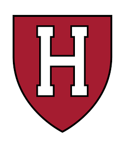
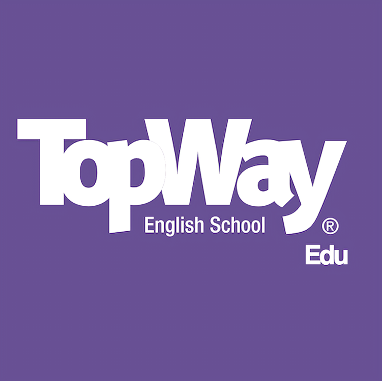
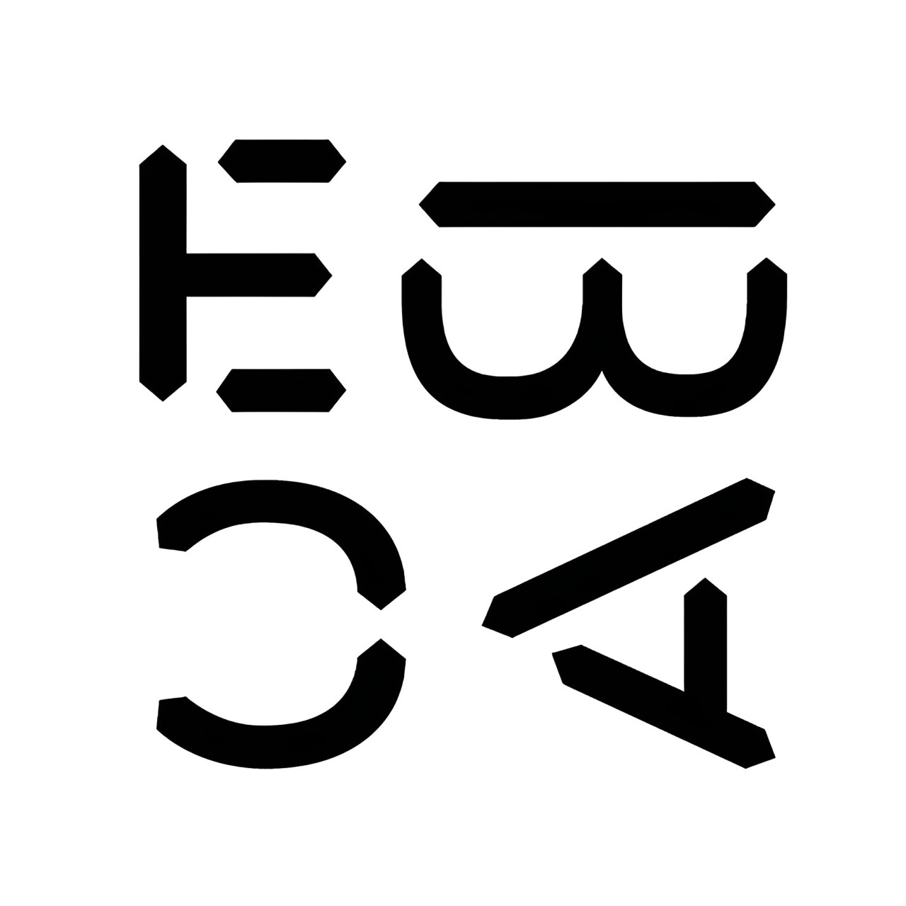
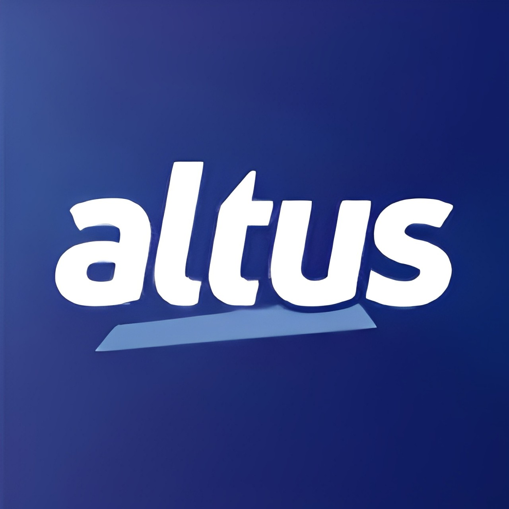
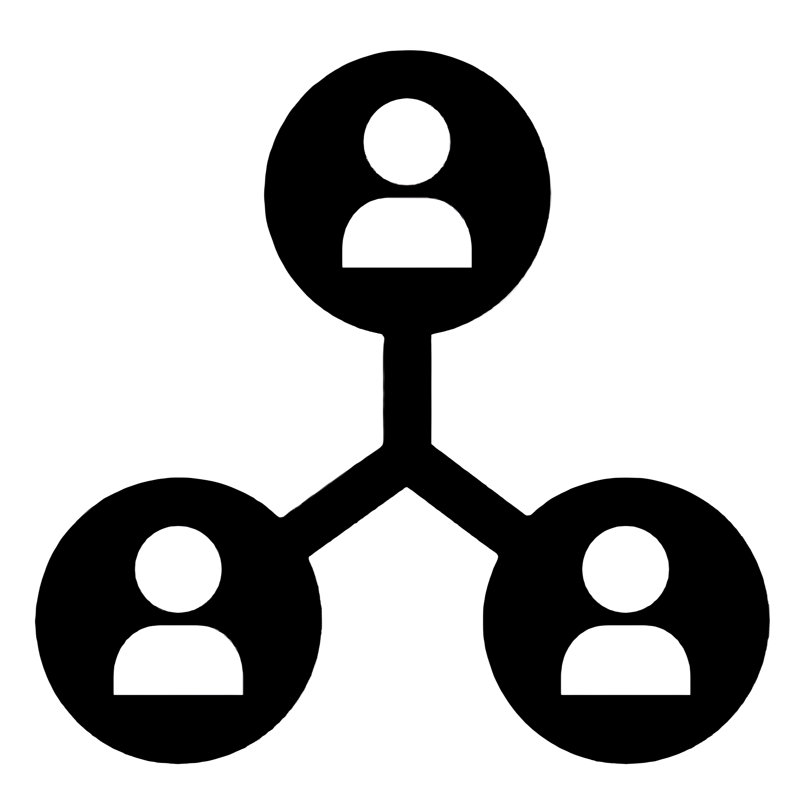

devMatch
This repository is a personal study project. The goal is to apply backend best practices and explore the AWS ecosystem (Lambda, S3, Cognito) in a controlled environment. It is not a commercial application.
Repository Access



Test Engineer Intern
Altus Automation Systems S.A
Mar 2022 - Aug 2023 · 1y 5mo
São Leopoldo, Rio Grande do Sul, Brazil · on-site
- In the Test Engineering team at Altus, I dealt with challenges related to software and hardware
- I developed and performed maintenance on test software using LabVIEW
- Contributed to a project to develop test firmware for a module, using the C language in the CubeIDE environment
- Developed initialization scripts and fixed bugs in Shellscript, in the Linux environment
Software Developer Intern
ADP - Automatic Data Processing
Dec 2024 - the moment
Porto Alegre, Rio Grande do Sul, Brazil · hybrid
- Developing and maintaining full-stack applications and microservices using JavaScript, React, Node.js and other technologies
for a global production environment, focusing on clean code and scalable architecture.
- Collaborating daily with international teams within an Agile framework to deliver new features and resolve bugs, maintaining
professional communication entirely in English.
- Utilizing industry-standard tools such as Jira, Bitbucket, and Jenkins to manage complex workflows and automated CI/CD pipelines.
- Ensuring high code quality and security by participating in peer reviews and remediating vulnerabilities identified through Snyk analysis.
- Practicing disciplined version control and organized Git workflows to maintain code integrity and streamline team collaboration.

This repository is a personal study project. The goal is to apply backend best practices and explore the AWS ecosystem (Lambda, S3, Cognito) in a controlled environment. It is not a commercial application.
Repository AccessCOVER LETTER
RESUME